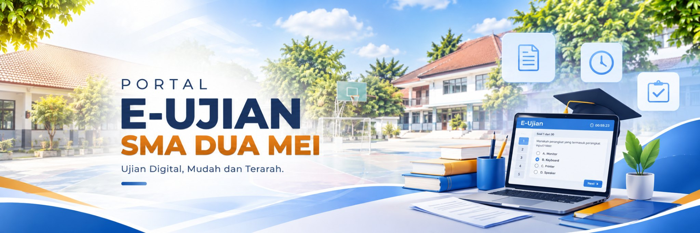

Petunjuk sebelum memulai
Pastikan kamu memilih kelas dan mata pelajaran yang benar. Setelah memilih kelas spesifik, kamu akan diarahkan ke halaman ujian.
LANGKAH MUDAH
Ujian dimulai dari sini
01Pilih kelas
02Pilih mapel
03Masuk ujian